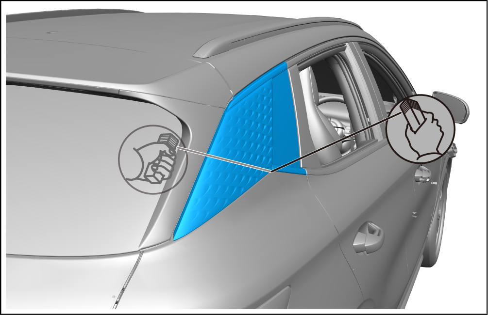
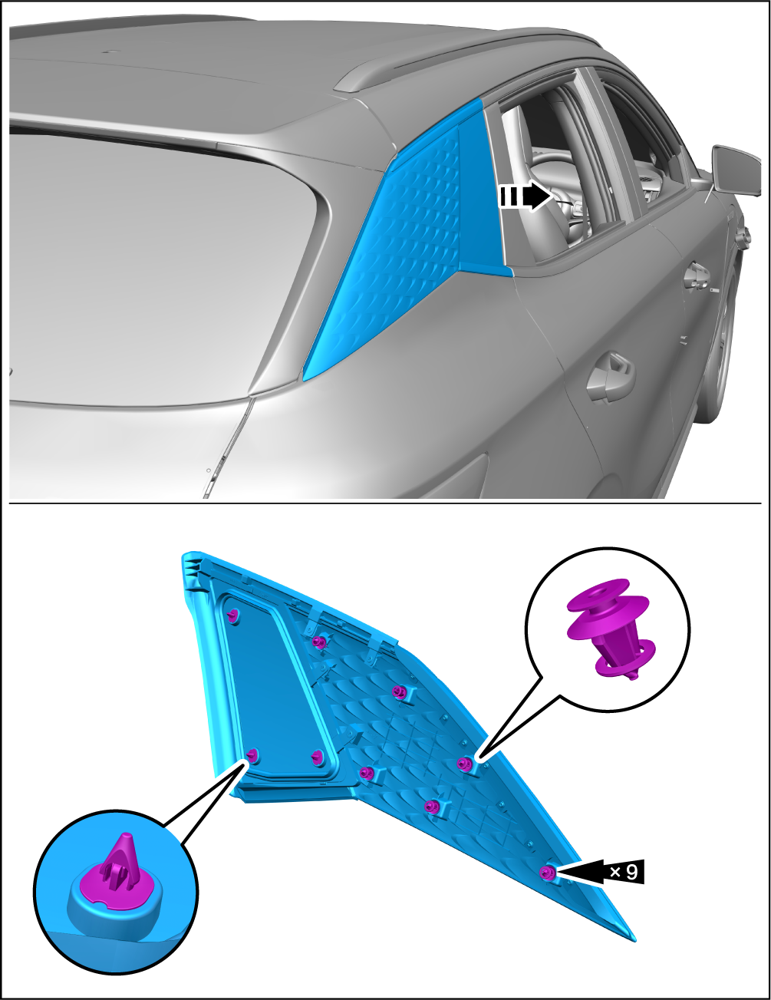

Right Rear Side Wall Glass Assembly - Removal and Installation
Removal

-
Must use the manufacturer's recommended glass cement, and misuse of glass cement will affect its own original adhesive property.
-
Carefully read the instructions and designations provided by the manufacturer of the glass adhesive used before operation, and be sure to adopt this procedure and observe all precautions throughout the operation.
-
If the coated surface is scratched or damaged for other reasons, be sure to repair the damaged part, otherwise the site will be corroded later.
-
Remove the right C-pillar upper guard assembly. See Right C-Pillar Upper Guard Assembly - Removal and Installation
-
Use an awl to drill a hole from the inside of the vehicle at the corner of the glass. Pass the steel wire through it. Wrap both ends of the steel wire on the wood block.
Caution-
The window sealing strip fits the body. To prevent damage to the body surface when pulling a steel wire to cut the sealant, it is necessary to cut the edge of the sealing strip;
-
Cover the body with tape to prevent damage to the body.
-
-
Pull the steel wire along the periphery of the glass and carefully saw the sealant of the right rear side wall glass assembly.
 -
Pry up the right rear side wall glass assembly.

Installation
-
Clean the surface of the left rear side wall glass assembly.
-
Remove the adhesive remaining on the contact surface between the vehicle body and the glass to ensure that the surface of the vehicle body meets the requirements.
Caution-
Be careful not to damage the body on its paint.
-
After cleaning, do not touch oil and water.
-
-
Apply primer at the adhesive position on the inside of the vehicle body and glass.
CautionAllow the primer to dry for more than 20 minutes, remove excess primer, and do not apply too much. -
Apply adhesive agent with a sealant gun, align the clip on the inside of the glass with the hole on the body, and press the glass into the body.
Caution-
After installation, make sure that the glass clings to the body completely.
-
If the door is closed suddenly before the adhesive is completely bonded, the glass may become loose or fall off.
-
Do not drive the vehicle before the bonding part is fully bonded to ensure a thorough and sufficient curing.
-
Each glass adhesive has its own curing time. Be sure to check the curing time of the used glass adhesive with reference to manufacturer’s instruction, and take necessary measures before the bonding part is fully bonded.
-
After the glass glue is cured, a waterproof test should be carried out. If water seepage is found, use glass glue to fill the leaking part. If leakage is still identified after sealing,remove the glass and restart the installation according to the above installation steps.
-